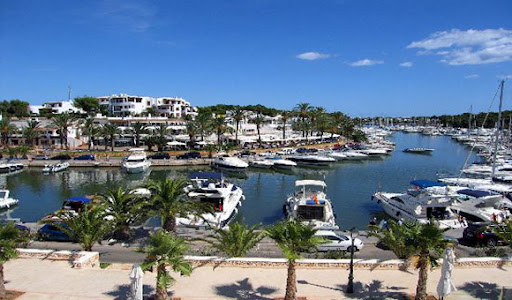

Destaques
4–8 de junho · 5 dias · 2 pessoas

Dia 1–2
Cala d’Or & Boat Day
Calas cristalinas, barco privado e jantar Michelin no Port Petit.

Dia 3
Beach Club & Palma
Gran Folies, Catedral gótica e noite em Santa Catalina.

Dia 4
Tramuntana & Formentor
Valldemossa, estrada de montanha e praia de Formentor.
💰 Orçamento por pessoa
✈️ Passagens aéreasR$ 7.300
🏨 Hotéis (4 noites)R$ 5.500
🚗 Carro + gasolinaR$ 800–1.200
⛵ Barco + beach clubR$ 1.000–2.500
🍴 Alimentação + drinksR$ 5.500
Total estimadoR$ 20k–25k
Dicas
Essenciais para a viagem
Clima em junho
28–32 °C, sol forte, pouca chuva. Protetor solar obrigatório.
Carro
Reservar com antecedência. Preferível SUV compacto. Estradas de montanha são estreitas.
Moeda
Euro (EUR). Cartão aceito em quase tudo. Leve um pouco de cash para praias.
Formentor
De junho a setembro, carro proibido 10h–19h. Use shuttle-bus ou vá antes das 10h.
Reservas
Gran Folies e Port Petit precisam de reserva com dias de antecedência.
🏆 Top 15 Calas
Ranking das melhores calas de Mallorca. Toque pra ver.


8
Portals Vells
Dia 3 · Opcional · 3 calas + caverna séc. XV
11
Cala Varques
Fora da rota · Arco de pedra natural · Tier 3
12
Cala Bóquer
Dia 5 · Opcional · 45 min trilha · Tier 3
13
Cala Murta
Fora da rota · Piquenique entre pinheiros · Tier 3
14
Cala Deià
Fora da rota · Lotada em junho · Tier 3
15
Cala Beltran
Fora da rota · A mais selvagem · Tier 3